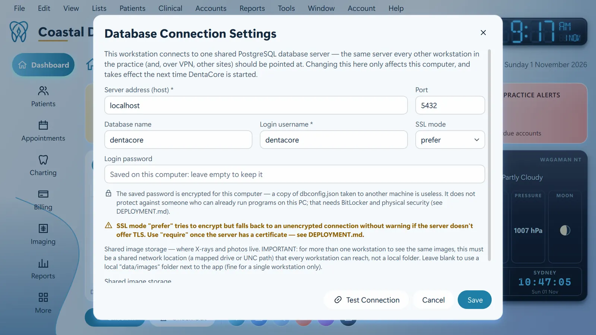
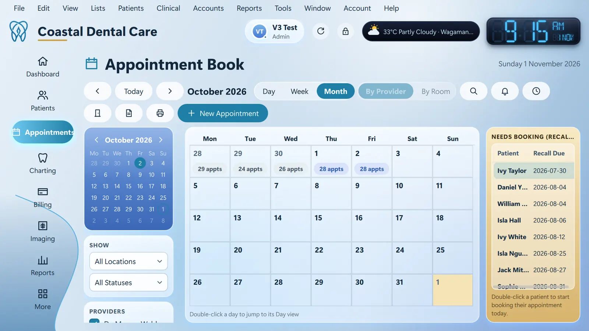

01 / 05 · Installation & setup
One installer for every computer
DentaCore-Setup
Copy the setup folder to a USB stick and run it on each computer.
- The main computer keeps the database. The installer sets up PostgreSQL as a Windows service, opens it to the practice's own network only, and shows a practice code like K7QM-2HPA-9TXC.
- A workstation asks for the practice code and finds the main computer on the network by itself.
- Installing again over an existing copy is an upgrade that keeps the database and settings.
- Uninstalling never deletes the practice's data.

02 / 05 · Installation & setup
Every site on one database
File → Database Connection Settings
Every workstation, and every site over a VPN, works on the same database, so everyone sees the same day as it changes.
- Connect over the practice network, or a VPN such as Tailscale between sites.
- Test Connection before saving.
- A shared images folder that every workstation can reach.
- SSL / TLS settings for the database connection.

03 / 05 · Installation & setup
Demo or real practice
First start
A brand-new database asks once how it will be used.
- Set up my practice: enter the practice's details and create your own Admin login. It starts empty, with starter lists to edit: the fee catalog, message templates, consent forms, image labels and blank forms.
- Try DentaCore with sample data: about 45 made-up patients with appointments, charts, invoices, X-rays and messages, and demo logins for training.
- Demo logins are refused on a real practice's database.

04 / 05 · Installation & setup
Moving from another system
Lists → Import
Bring your existing data with you.
- Conversions are already available for some of the mainstream practice systems.
- We can set up a conversion for your system: patients, appointments, fees, balances and images, matched field by field.
- You check a preview before anything is written.
- Import your fee book from a CSV or Excel export.

05 / 05 · Installation & setup
What you need
Requirements
DentaCore runs on the Windows computers a practice already has.
- Windows workstations, with one acting as the main computer.
- No separate graphics card needed, even for the 3D views.
- A shared network folder for images when there's more than one workstation.
- An internet connection only for the optional services you switch on, and for updates.
